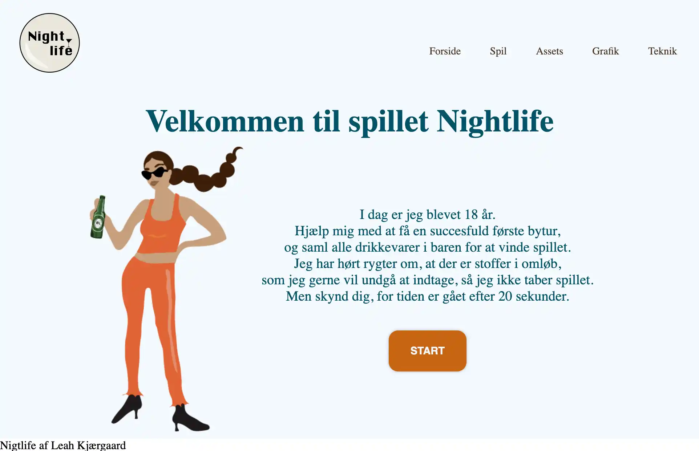
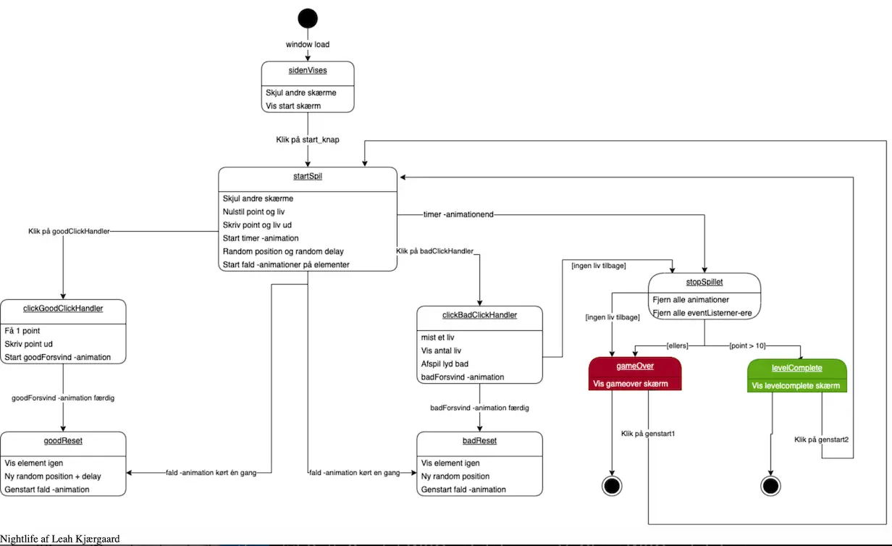

ANIMATION
Viden
I temaet Grundlæggende Animation, skulle vi lave et interaktivt spil med forskellige animationer. Vi blev introduceret til Adobe Illustrator, hvor vi skulle tegne alle elementer til vores respektive spil og eksportere dem som en svg fil. Hertil var der fokus på stilart for vores UI elementer. For at vores spil fik de rette funktioner, blev vi undervist i brugen af programmeringssproget Javascript, CSS animationer, og hvordan man benytter consol log til fejlfinding i Google Chrome og Firefox. Herudover blev vi undervist i at lave vektorgrafik.
Færdigheder
Jeg startede med at tegne mine elementer i hånden, og samtidig gøre mig nogle tanker om, hvilken stilart spillet skulle have. Dernæst begyndte jeg på min analyse af den valgte stil, lavede et aktivitetsdiagram og til sidst et state machine diagram. I Javascript blev vi introduceret til “eventlistners”, som en funktion for vores elementer.
Kompetencer
For at se funktionaliteten på mine elementer, benyttede jeg mit aktivitetsdiagram og mit State Machine diagram. På den måde, kunne jeg se hvornår funktionerne blev benyttet, og ikke mindst hvordan spillet skal spilles. Ligeledes er det nemmere for brugeren af sitet, at se hvordan spillet fungerer. Ved at tilføje ‘Eventlistners’ i Javascript kunne jeg starte og stoppe funktioner i spillet, og på den måde lave forskellige effekter og funktioner for mine elementer og generelt på mit spil.
Refleksioner
Jeg synes til at starte med, at Javascript var svært at bruge, og generelt forstå dets funktioner og selve opstillingen i VSCode hurtigt rodet for mig. Derudover ved jeg, at jeg til anden gang skal huske at fokusere på min brainstorm, og især stilart fra start af, og generelt reflektere over, om det giver mening eller sammenhæng med det jeg tegner i illustrator. Jeg gik hurtigt igang med at tegne mine elementer i illustrator, og mit færdige resultatet lignede derfor ikke min valgte stilart nok, fordi jeg blev alt for optaget af at tegne i illustrator. Mit spil drillede desværre også, hvorfor nogle af mine funktioner ikke virkede optimalt. Enten skulle jeg have spurgt om mere hjælp, eller lagt mit fokus på javascript i højere grad, end designprocessen i form af mine tegninger i illustrator.
